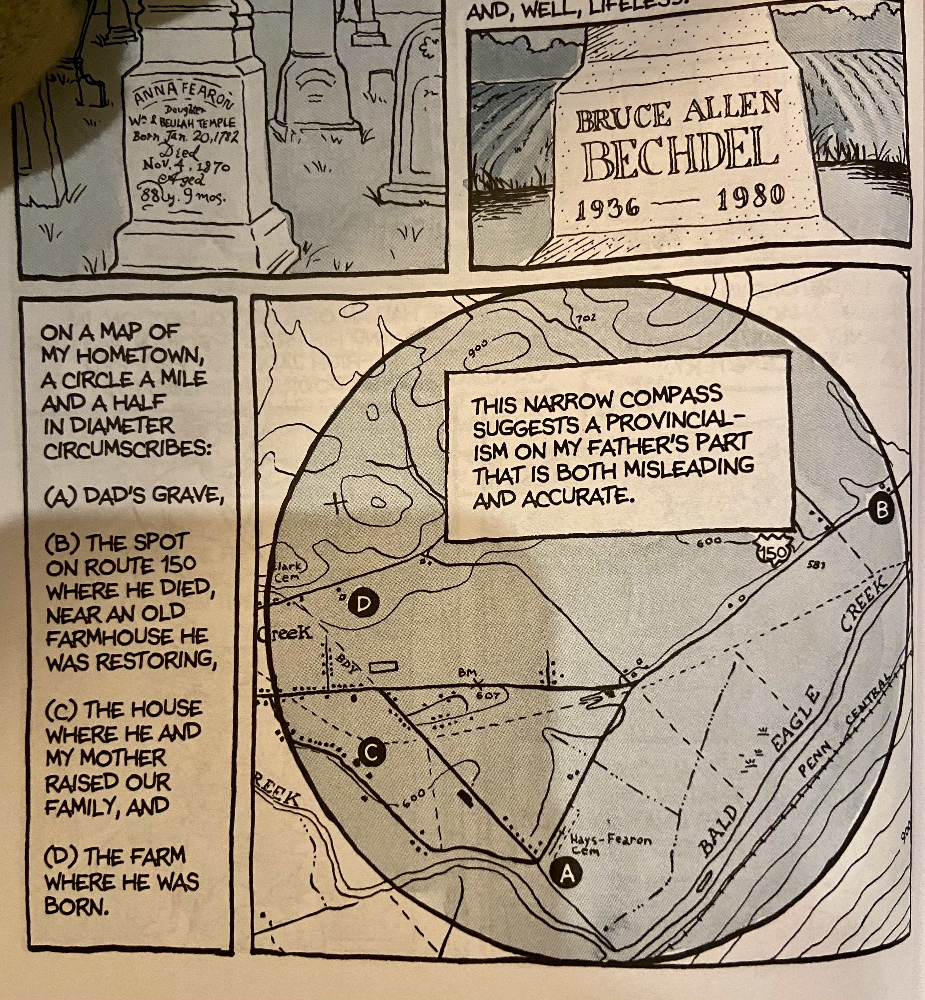

Fun Home: A Family Tragicomic is a 2006 graphic memoir by the American cartoonist Alison Bechdel, author of the comic strip Dykes to Watch Out For. It chronicles the author's childhood and youth in rural Pennsylvania, United States, focusing on her complex relationship with her father. The book addresses themes of sexual orientation, gender roles, suicide, emotional abuse, dysfunctional family life, and the role of literature in understanding oneself and one's family.

Info on places, that is, the content, will go here.